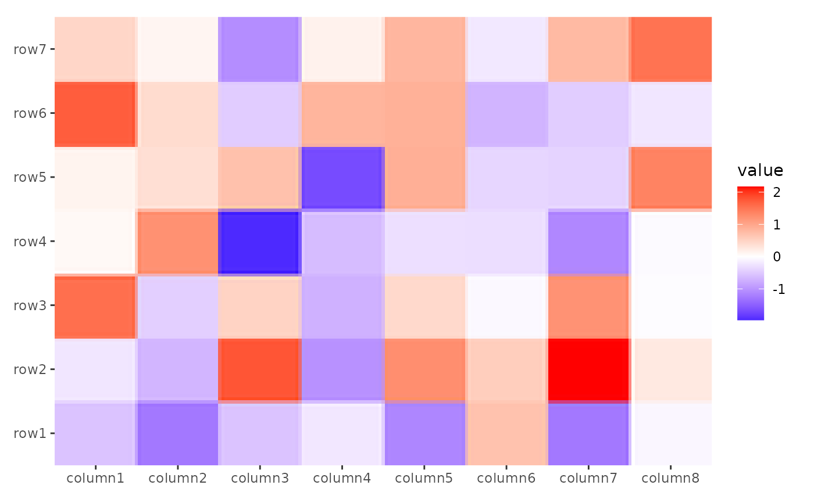

The function rasterizes input graphical objects (e.g., grob, layer, ggplot) and optionally processes the resulting raster using magick, a powerful image manipulation library. This allows for advanced graphical transformations directly within the plotting pipeline.
Arguments
- x
An object to rasterize, can be a
grob(),layer(),ggplot(), or a list of such objects.- magick
A function (purrr-style formula is accepted) that takes an
image_read()object as input and returns an object compatible withas.raster(). You can use any of theimage_*()functions from the magick package to process the raster image.- ...
Not used currently.
- res
An integer sets the desired resolution in pixels.
- interpolate
A logical value indicating whether to linearly interpolate the image (the alternative is to use nearest-neighbour interpolation, which gives a more blocky result).
Examples
# Currently, `magick` package require R >= 4.1.0
if (requireNamespace("magick")) {
# data generated code was copied from `ComplexHeatmap`
set.seed(123)
small_mat <- matrix(rnorm(56), nrow = 7)
rownames(small_mat) <- paste0("row", seq_len(nrow(small_mat)))
colnames(small_mat) <- paste0("column", seq_len(ncol(small_mat)))
ggheatmap(small_mat, aes(.x, .y), filling = NULL) +
raster_magick(geom_tile(aes(fill = value)), res = 20)
ggheatmap(small_mat, aes(.x, .y), filling = NULL) +
# Use `magick::filter_types()` to check available `filter` arguments
raster_magick(geom_tile(aes(fill = value)),
magick = function(image) {
magick::image_resize(image,
geometry = "50%x", filter = "Lanczos"
)
}
)
}
#> Loading required namespace: magick
